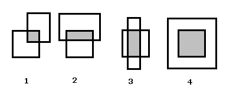
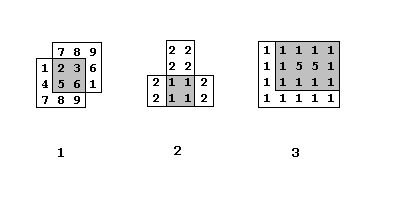

| Nama Program: | pjj0207.PAS / C / CPP |
| Batas Run-time: | 1 detik / test-case |
| Batas Memori: | 16 MB |
| Nama Berkas Masukan: | Standard input (keyboard) |
| Nama Berkas Keluaran: | Standard output (layar) |
Diberikan dua buah matriks berukuran sembarang, N x M (1 ≤ N ≤ 25, 1 ≤ M ≤ 25). Catatan: jumlah baris dan jumlah kolom belum tentu sama dan kedua matriks belum tentu berukuran sama pula.
Dalam latihan ini Anda memeriksa apakah kedua matriks tersebut bertumpukan (overlapping). Kedua matriks overlapping apabila kedua matriks tersebut dapat diposisikan di dunia nyata sehingga ada submatriks dari matriks pertama yang sama dengan submatriks dari matriks kedua.
Ada banyak cara dua buah matriks dapat saling overlapping di dunia nyata:
Daerah yang berwarna abu-abu adalah submatriks dari kedua matriks yang saling bertumpukan. Catatan: pada gambar ke-4, sebuah matriks tepat adalah submatriks dari matriks lainnya.
Program anda harus menemukan submatriks dengan sebanyak-banyaknya elemen yang overlapping dari kedua matriks yang diberikan, dan mengeluarkan banyak baris dan banyak kolom dari submatriks tersebut. Jika tidak ada yang bertumpukan maka keluarkan '0 0'.
Format masukan untuk kedua matriks adalah seperti latihan-latihan sebelumnya.
Format keluaran adalah banyak baris dan banyak kolom submatriks yang Anda temukan, dalam satu baris dipisahkan spasi. Panjang dan lebar submatriks terbesar untuk setiap test case dijamin unik.
3 3 1 2 3 4 5 6 7 8 9 3 3 7 8 9 2 3 6 5 6 1
2 2
2 4 2 1 1 2 2 1 1 2 4 2 2 2 2 2 1 1 1 1
2 2
3 4 1 1 1 1 1 5 5 1 1 1 1 1 4 5 1 1 1 1 1 1 1 5 5 1 1 1 1 1 1 1 1 1 1 1
3 4
3 3 1 2 3 4 5 6 7 8 9 3 3 1 2 3 4 5 6 7 8 8
0 0
Untuk masukan pertama, kedua matriks bertumpukan di submatriks berukuran 1 x 1
1
dan submatriks berukuran 1 x 3
7 8 9
serta submatriks berukuran 2 x 2
2 3 5 6
Submatriks yang terbesar adalah submatriks 2 x 2 (ada 4 elemen).
Hasil keluaran untuk masukan 1, 2, dan 3 dapat digambarkan dengan diagram berikut:
Ada banyak cara memecahkan soal ini. Salah satu cara yang bisa dipakai adalah sebagai berikut:
Bayangkan bahwa matriks pertama diletakkan di tempat tertentu dan tidak bergerak.
Bayangkan bahwa matriks kedua diletakkan di sebelah kiri atas matriks pertama, tetapi tidak menyentuh matriks pertama.
"Jalankanlah" matriks kedua sehingga overlapping pada submatriks 1 x 1 dengan matriks pertama, lalu overlapping pada submatriks 1 x 2, 1 x 3, dan seterusnya.
Lalu matriks kedua diletakkan lagi di sebelah kiri atas matriks pertama. Matriks kedua dijalankan sehingga overlapping pada submatriks 2 x 1, 2 x 2, 2 x 3, dan seterusnya.
Coba semua kemungkinan (matriks kedua dijalankan terus menerus) sampai pada akhirnya, matriks kedua berada di sebelah kanan bawah matriks pertama.
Jika masih belum begitu jelas, dapat didiskusikan dengan peserta lain atau pembina di forum diskusi.